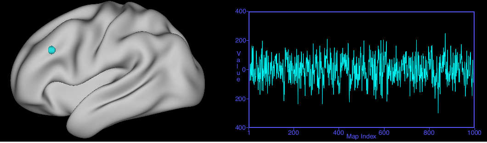

Data/Time Series Chart View
When Data Series or Time Series is selected as
the Chart Type, the Toolbar
appears like this:

- The only difference between a Data Series
or Time Series file is that in a Time Series, the Map Index is
a unit of time (each map in the series shows data at a
particular timepoint).
- Select a Data/Time Series chartable
file in the Overlay Toolbox Charting
tab.
- Charts are viewed for a particular
brainordinate, therefore you must click on a grayordinate in a
volume or surface Viewing
Tab, then click back to the Chart tab to
view the graph for that location. The color of the graph
should match the color of the brainordinate ID sphere, as
shown in the image:

- Chart Axes: Allows
adjustment of the minimum and maximum values for each axis.
The Auto checkboxes indicate that the range for the
axis is automatically set to the min and max of the data being
displayed.
- Chart Attributes: To adjust
attributes of the chart display, such as the width of the
graph line.
- Tab: These across Tab
functions do not affect Chart View.